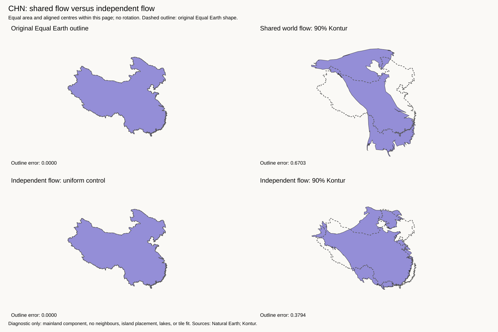
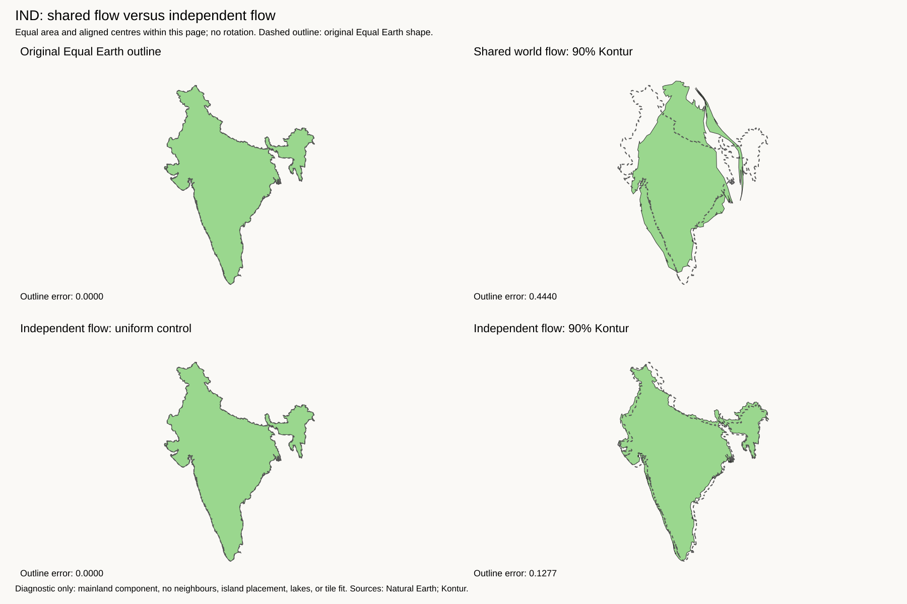
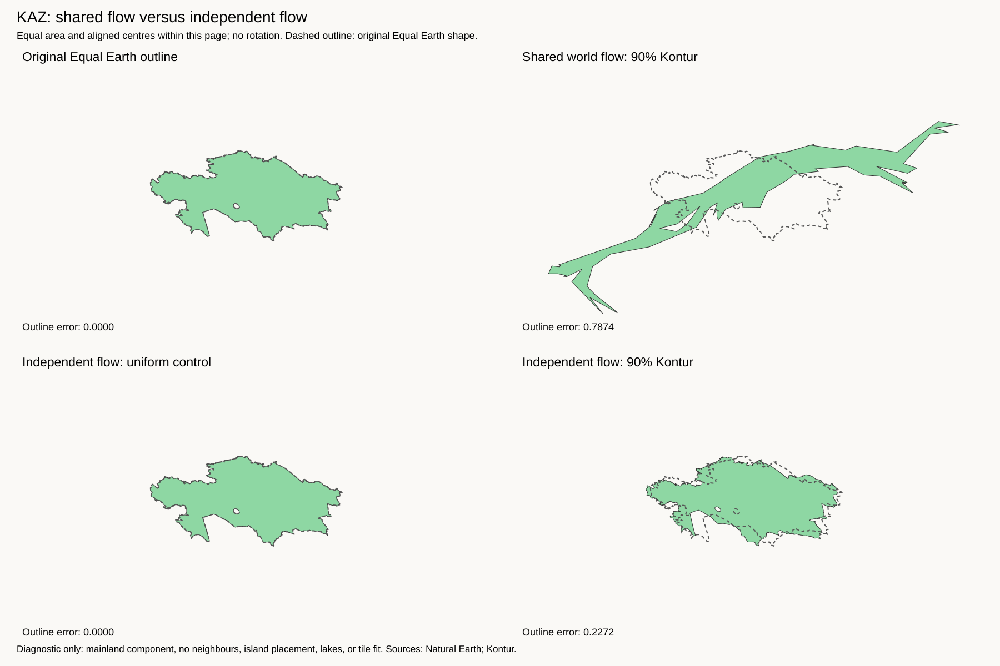
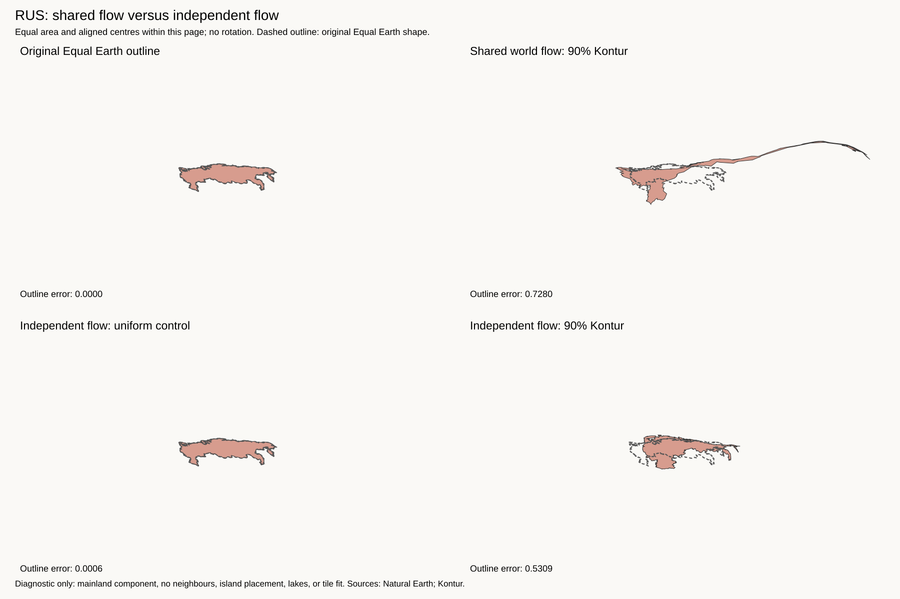
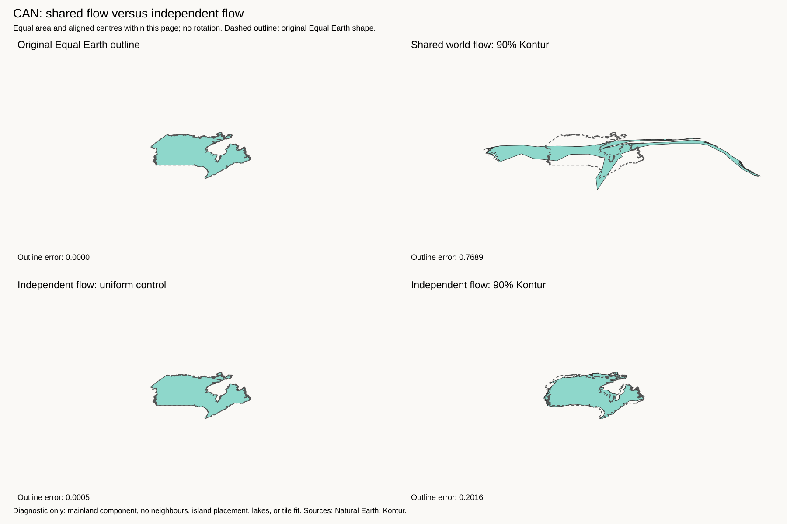

There is now a clear shape change. China is more compact. Russia no longer forms a long strip above China. India and Kazakhstan also retain much more recognisable outlines. The extra Canada test succeeds at grid 512.
Russia · China · India · Kazakhstan · Canada · Current best: unchanged
Each solver call receives one mainland component. All neighbours are absent. The exact coarse Kontur patches and target values come from the saved current-best flow inputs. Unlike an empty strip in a shared flow field, this gives each country an independent deformation.
The uniform control should retain the original shape. It does, within small numerical errors. The 90% Kontur result shows distortion from population distribution inside the country, without its neighbours. Russia still expands in the populated west and contracts in the sparsely populated east.
These tests remove all neighbouring constraints, not only sparse borders. The solver domain and effective spatial resolution also change. Russia and China give similar results at grids 256 and 512. This supports the diagnosis, but it does not show that a few selected cuts can achieve the same result.
Lower is better. Shapes are aligned by centre and area, without rotation. Patch error measures the solver's local area accuracy.
| Mainland | Grid | Shared flow | Independent 90% | Maximum patch area error |
|---|---|---|---|---|
| RUS | 256 | 0.728 | 0.528 | 0.48% |
| CHN | 256 | 0.670 | 0.379 | 0.39% |
| IND | 256 | 0.444 | 0.128 | 0.12% |
| KAZ | 256 | 0.787 | 0.227 | 0.88% |
| CAN | 256 | 0.769 | Failed: non-simple boundary. See solver log. | |
| RUS | 512 | 0.728 | 0.531 | 0.61% |
| CHN | 512 | 0.670 | 0.382 | 0.82% |
| CAN | 512 | 0.769 | 0.202 | 0.84% |
Target populations and tile-area budgets are unchanged. Independent outputs are uniformly scaled to their component budgets after fitting. These are continuous shapes, not tile layouts. Panels use equal area within each page; country size and position cannot be compared between pages. No islands or lakes were placed. The failed Canada 256-grid output is not used.
Use these independent shapes as reference shapes for a small regional assembly test. Keep dense borders connected, allow the audited sparse borders to separate, and penalize overlap, excessive gaps, and shape change. Success requires preserving most of this shape improvement without losing the important borders. Do not replace the current best yet.
Failed Canada run · Archive checksums · Solver documentation
Independent shape: enlarged · Settings and checks

Independent shape: enlarged · Settings and checks

Independent shape: enlarged · Settings and checks

Independent shape: enlarged · Settings and checks

Independent shape: enlarged · Settings and checks
